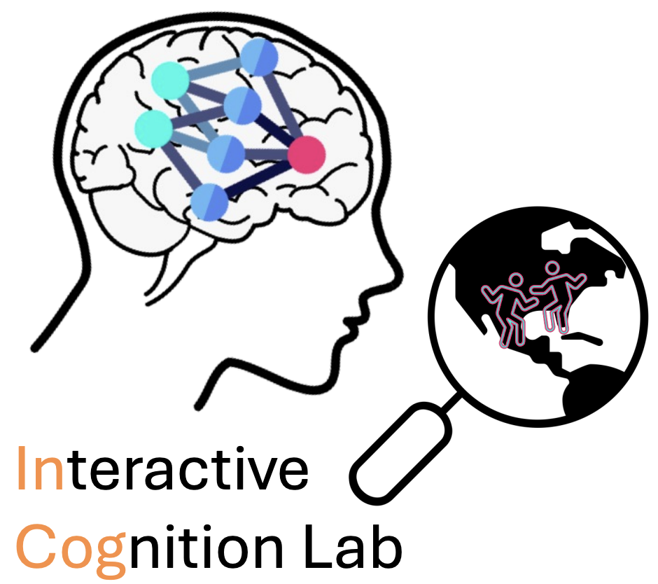

The Interactive Cognition Lab uses an interdisciplinary framework, drawing from computational neuroscience, cognitive science and psychology, to uncover how learning and memory processes guide individual and interactive behavior in the laboratory and real world.
What role does long-term memory (e.g., episodic and semantic) play in reinforcement learning?
How does individual learning and memory scale up to support social and collective cognition, including representations of other people and shared events?
Does mental health predict cognitive biases that underlie clinically-relevant symptoms?